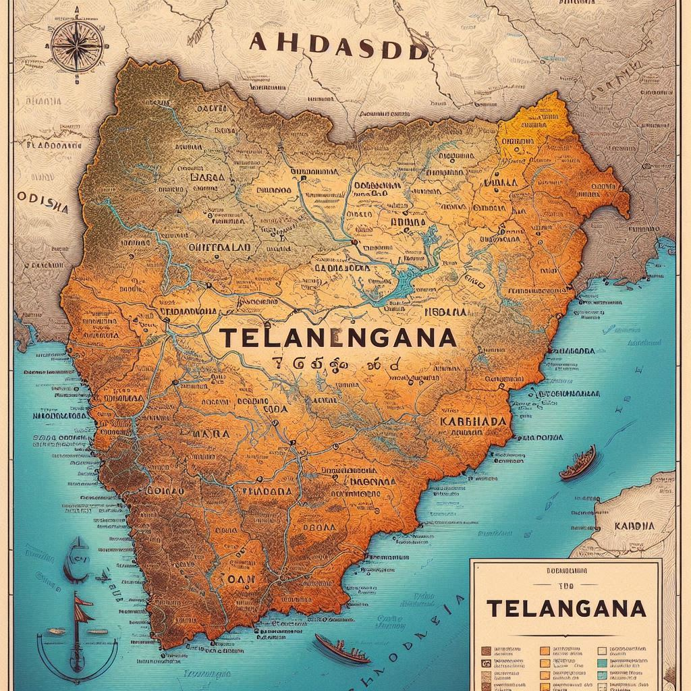
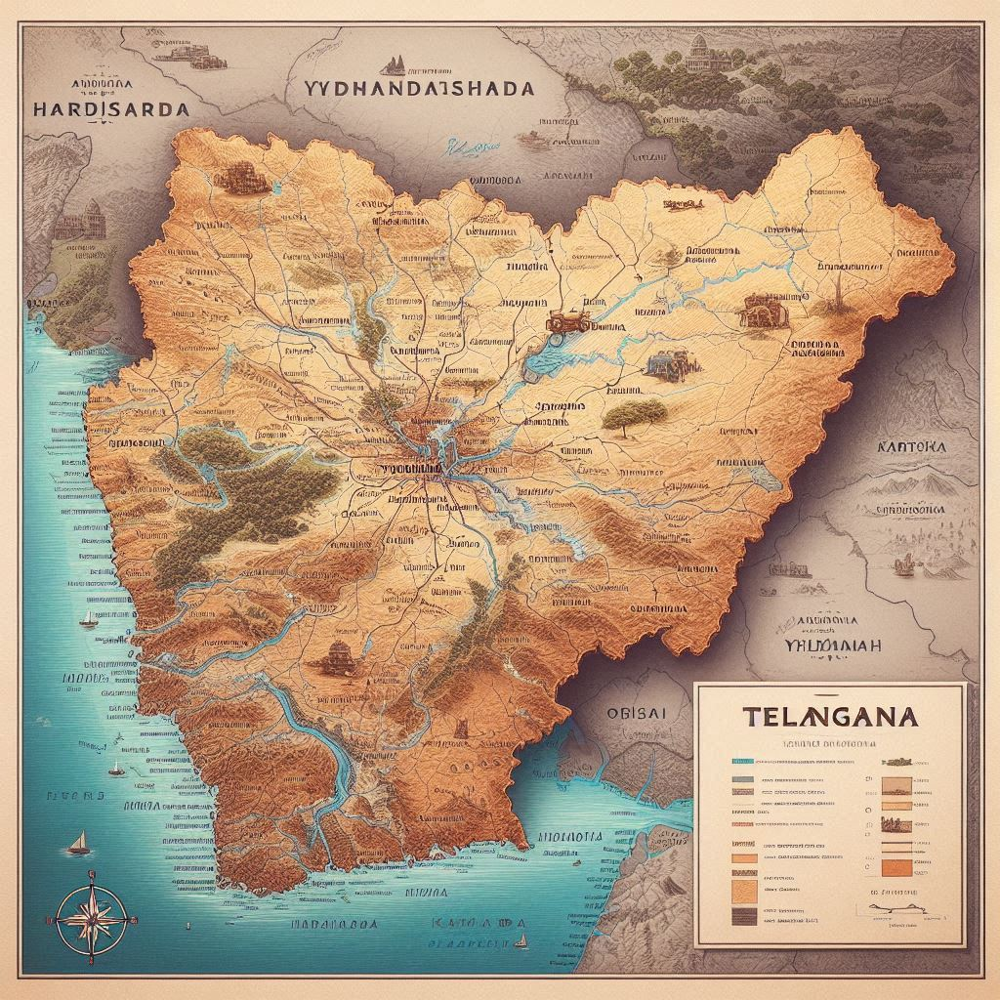

Certainly! Here’s a more detailed description of Telangana’s geographic location and its physical features:
1. Geographic Coordinates
- Telangana is situated between 16° 45′ N latitude and 19° 50′ N latitude and 77° 5′ E longitude and 81° 5′ E longitude. It lies in the central part of southern India.
2. States Surrounding Telangana
- Maharashtra to the north: Telangana shares a border with Maharashtra, especially the districts of Adilabad and Nirmal.
- Chhattisgarh to the east: The eastern border of Telangana is shared with Chhattisgarh. This area is important for its mineral-rich lands and forest cover.
- Andhra Pradesh to the south and southeast: Telangana and Andhra Pradesh were once part of a single state, Andhra Pradesh, before Telangana became a separate state in 2014. The two states still share borders around areas like Khammam, Nalgonda, and Warangal.
- Karnataka to the west: Telangana’s western boundary is shared with Karnataka, particularly the regions of Raichur and Bagalkot districts.
3. Topography
- Deccan Plateau: The majority of Telangana is located on the Deccan Plateau, a vast and ancient landmass that stretches across much of southern India. The plateau is characterized by:
- Rocky Terrain: The region has numerous rocky outcrops and hillocks, with extensive granite rock formations that have formed over millions of years.
- Elevations: The state is generally elevated, with the average elevation ranging from 300 meters (1,000 feet) to 600 meters (2,000 feet) above sea level.
- Mountains and Hills: The Nallamala Hills in the southeast and the Satmala Hills in the northern part of the state are significant mountain ranges. The Nallamala Hills are part of the Eastern Ghats, while the Satmala Range is part of the Western Ghats system.
- Plains and Plateaus: Telangana is primarily covered by flat plains and undulating plateaus, with vast stretches of land used for agriculture. The Telangana Plateau is known for its fertile soils, which are ideal for growing crops like rice, cotton, and maize.
- Godavari and Krishna River Basins: The state is divided between two major river basins:
- Godavari River Basin: The Godavari River, which originates in the Western Ghats in Maharashtra, flows through the northern part of Telangana, forming the state's eastern boundary. It is the second-largest river in India and plays a vital role in the state's irrigation system.
- Krishna River Basin: The Krishna River flows through the southern part of Telangana, with major cities like Hyderabad and Mahbubnagar located along its course. Both rivers, along with their tributaries, have a significant role in agriculture and water supply.
4. Rivers and Water Resources
- Godavari River: Known as the "Dakshina Ganga," the Godavari is the most important river in Telangana, and it plays a central role in irrigation and agriculture, especially in the districts of Khammam, Nizamabad, and Karimnagar.
- Krishna River: This river flows through the southern part of Telangana and is a major water source for the region, especially for areas around Hyderabad.
- Manjira River: A tributary of the Godavari, the Manjira River flows through the central part of Telangana, providing water to several districts, including Medak and Nizamabad.
- Other Rivers and Reservoirs: The Musir and Penganga rivers are important tributaries of the Godavari, and Kakatiya Canal, a major irrigation project, also serves the agricultural heartland of Telangana.
5. Climate
- Summer (March to June): Summers in Telangana are extremely hot, with temperatures often soaring above 40°C (104°F), especially in districts like Hyderabad, Khammam, and Warangal. The state experiences dry conditions during this time.
- Monsoon (June to September): The southwest monsoon brings rainfall, which is crucial for the state’s agriculture. Telangana receives moderate to heavy rainfall, especially from the Godavari River Basin in the east to the Krishna River Basin in the south. The eastern regions receive more rainfall than the western areas, which are more arid.
- Winter (October to February): Winters are relatively mild and pleasant, with temperatures ranging between 15°C (59°F) to 25°C (77°F). This is the most comfortable season, with clear skies and cool evenings, making it ideal for travel and outdoor activities.


6. Flora and Fauna
- Forests and Wildlife: Telangana is rich in forests, especially in the northern and eastern parts, where there are several protected wildlife sanctuaries and national parks.
- Nallamala Forests: These forests are home to various species of wildlife, including tigers, leopards, sloth bears, and deer.
- Kawal Wildlife Sanctuary and Eturnagaram Wildlife Sanctuary are notable reserves for species like the tiger and Indian bison.
- Flora: The forests of Telangana feature a mix of tropical and subtropical species. Trees like teak, sal, and sandalwood are common, along with a variety of medicinal plants.
7. Natural Resources and Agriculture
- Minerals: Telangana is rich in mineral resources, including coal, limestone, bauxite, and dolomite. These minerals support the state’s industries, particularly in areas like Adilabad, Khammam, and Bhadrachalam.
- Agriculture: Agriculture is the backbone of Telangana’s economy, with major crops including rice, cotton, sorghum, maize, and groundnut. The fertile river basins, particularly those of the Godavari and Krishna rivers, support extensive irrigation, which is essential for the state's agricultural productivity.
8. Urbanization and Infrastructure
- Hyderabad: As the state capital, Hyderabad is a major urban hub for technology, education, and commerce. The city is strategically located in the center of the state and has become a global city in terms of infrastructure and development.
- Rural Areas: While urbanization has significantly increased, large parts of Telangana, especially the northern and eastern regions, remain rural and are dependent on agriculture for their livelihood.
9. Agricultural Regions
- Godavari and Krishna Basins: The fertile plains in the Godavari and Krishna river basins are major agricultural zones in Telangana. These regions grow rice, cotton, sugarcane, and a variety of vegetables.
- Telangana's Rice Bowl: The state is often referred to as the "Rice Bowl of India" due to the large-scale cultivation of paddy in regions such as Khammam, Warangal, and Nalgonda.
Conclusion
Telangana is geographically diverse, with its unique topography, rivers, and climate contributing to its agricultural wealth and cultural identity. The state's location at the heart of southern India places it at a strategic crossroads for trade, culture, and tourism, making it an important hub in the Indian subcontinent.